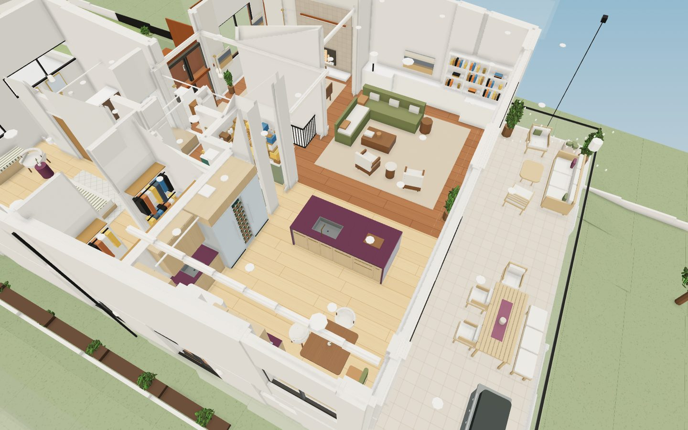
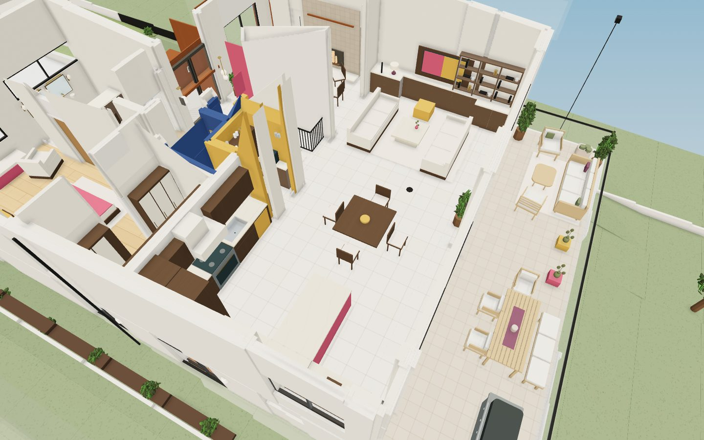
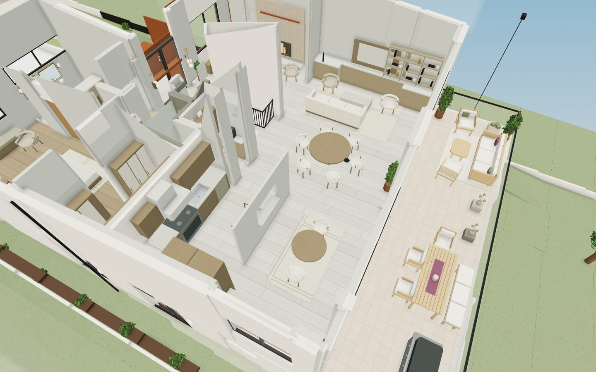
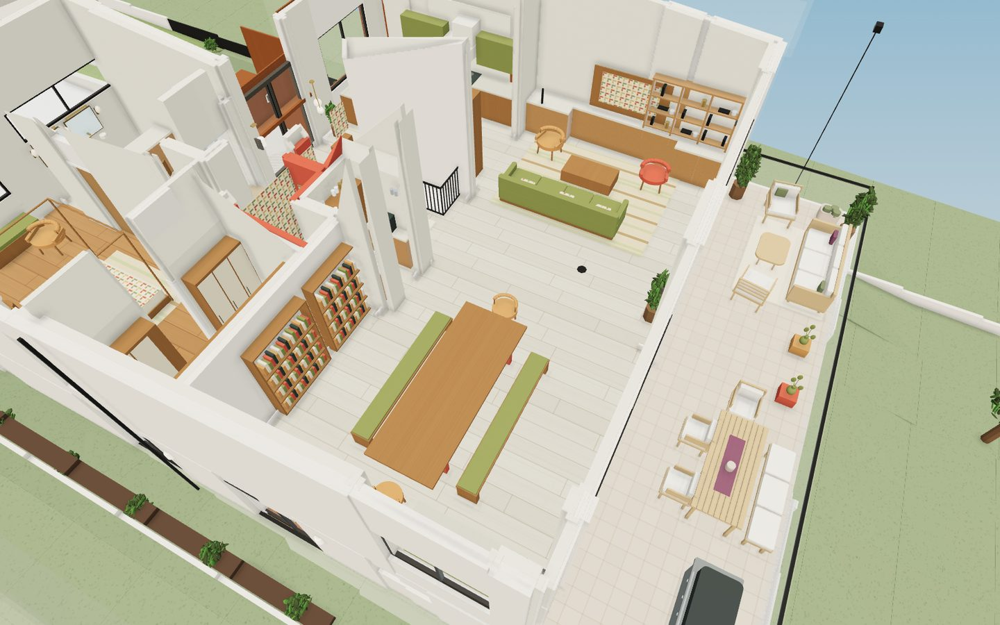
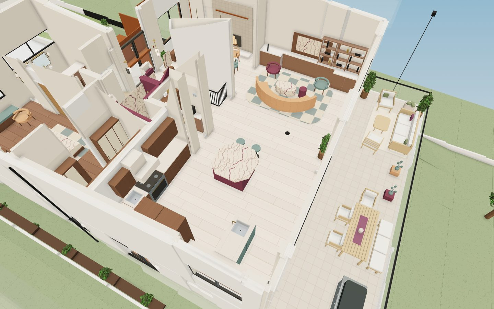
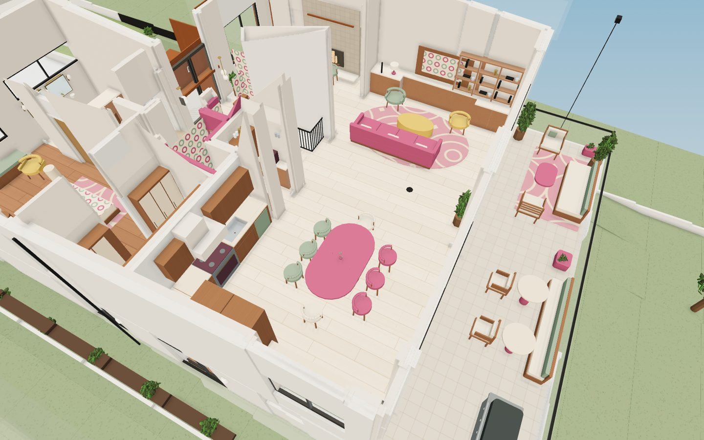
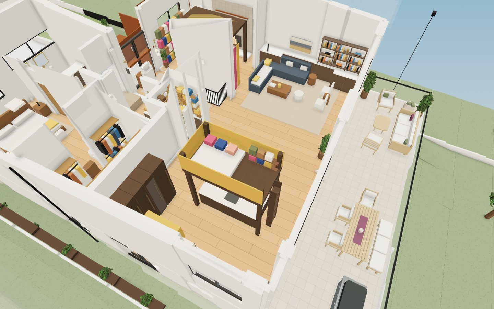
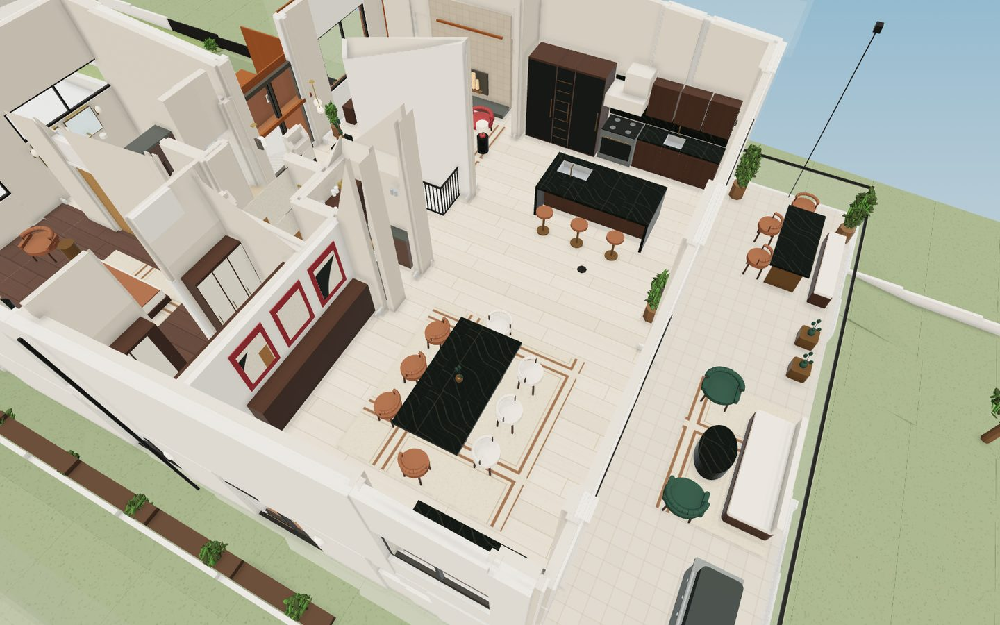
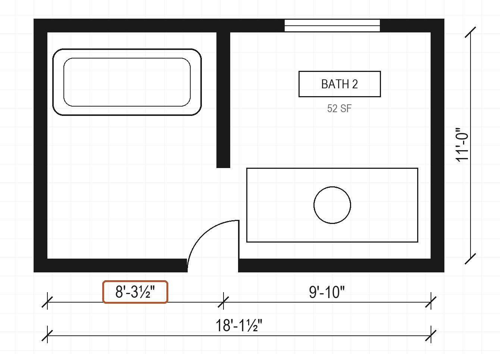

Ask your house anything.
Point at a room and request a study. We ask a few questions first, then researches your documents and the web and writes a report with its sources. These are real ones, with identifying details removed.
Send us your architect's plans. We read every sheet, check every number against your drawings, and hand back a 3D home you can walk through, restyle and repaint, with a progress page that shows each step as it happens.
Priced per house · No subscription · Every dimension traced to your drawings


A real remodel, modeled from its architectural drawings. Drag to compare. Design layers are illustrative styles made by an AI assistant.
Three steps. We read your plans the way a careful drafter would before we build anything.
Your architect's PDF set is enough: floor plans, elevations, sections and schedules. The CAD file (DWG), photos or a survey make it even more exact, but they are optional.
Every sheet is read and every fact written down with the sheet it came from. A second, independent reader checks that reading against your drawings, and the model has to pass its checks before you see it. Questions come to you only when your drawings can't answer them.
Walk through in 3D, open each floor like a dollhouse, try design styles, and choose floors and colors room by room. Share a private link with your architect, contractor or family.
Photo-redesign apps repaint a picture of one room. What ifs? restyle your actual house, room by room: another era, a room used differently, an addition. Switch between them in a click.






Illustrative styles made by an AI assistant, described by look rather than named after anyone. Not affiliated with or endorsed by any designer.
Try the choices you are actually about to make, on the house you are actually building.
Stucco, roof, and each room's floors, walls and cabinets. Tap a room, pick a swatch or any custom color, and save schemes to compare. Share the exact look as one file.
An addition off the back, a second story, an ADU over the garage, the kitchen opened to the living room. Describe it and we model it as a layer you can flip against the house as drawn.
Walk through each option at eye level, day and night, then ask for a study: will the new room get enough light, does the island still clear, what does it change?
Anyone with a set of plans and decisions to make.
For homeowners, and for architects and designers who want to hand clients a model they can explore on their own.
A pretty model with invented dimensions is worse than none. We prove every number, and the build refuses work that doesn't add up.

Point at a room and request a study. We ask a few questions first, then researches your documents and the web and writes a report with its sources. These are real ones, with identifying details removed.
No subscription. Pay once for your house; the tour is yours to keep and share.
Architects, designers and builders: per-project pricing for your clients, under your name. talk to us (opens soon).
Preview: checkout is not open yet. A visualization and planning tool, not a construction document; your architect's drawings govern.
Your architect's plan set as a PDF. CAD files, photos or a survey help but are optional. Viewing your tour needs only a web browser, on a computer or a phone.
Usually within two business days for a standard home. The build itself is quick; the time goes into reading every schedule, elevation and section first and checking that reading, so the model matches your architect's design instead of needing rounds of fixes. Larger or unusual homes take longer. Your progress page shows each step as it happens, and asks a question only when your drawings can't answer it.
Only the people building your model. Your plans are used for your house and nothing else, and your tour and progress page are private links that you choose whether to share.
As accurate as your drawings. Every dimension must trace to a printed number, and anything that doesn't is labeled as assumed. It is a visualization and planning tool, not a construction document; your architect's drawings still govern.
Yes. Describe the change (an addition, a moved wall, a second story) and we model it as a design layer, so you can switch between it and the house as drawn. Revisions are included in each tier.
No. They are researched, cited write-ups to help you think and ask better questions of your architect, engineer or contractor.
That works. Scanned and CAD-drawn sheets are read from sharp close-ups, and each number is tied to the image it came from so you can check it.
Start with the sample tour, or send us your plans.